Staff in Post Dashboard
Description
This dashboard is designed to provide the user with intelligence around the numbers of staff working in the organisation.
Allocation
This dashboard is available to the following URPs:
XXX Administrator Self Service (Payroll Approvals Not Required)
XXX Administrator Self Service (Payroll Approvals Required)
XXX BI Administration
XXX Finance Reporting
XXX Finance Reporting and Hub Mapping
XXX HR Administration
XXX HR Administration (With RA)
XXX HR Management
XXX Manager Self Service (Payroll Approvals Not Required)
XXX Manager Self Service (Payroll Approvals Required)
XXX Payroll Administration
XXX Payroll Audit
XXX Payroll Super Administration
XXX Pensions Administration
XXX Property Management (only Property Register page)
XXX Supervisor Self Service
XXX Supervisor Self Service (Limited Access)
Summary Tab
Prompts
Organisation (Default: None)
Organisation(s)
Staff Group(s) (Multi-select)
Person Type(s) (Multi-select, default: Employee, Employee and Applicant)
Employee Person Type(s) (Multi select)
Assignment Status
Occupation Code
Assignment Category(s) (Multi-select: default: exclude Locum Bank and Honorary)
Primary Assignments Only
Effective Date (Default today)
Organisation Level 1-13
Cost Centre Org Level 1-12
Job Role
For Establishment Section:
Pay Band(s) (Multi-select: default: All AfC)
Staff in Post Summary
Description
This analysis shows the headcount or FTE restricted by the Prompts of the dashboard. The figures included in this analysis are defined in the same way as the ‘NHS HR Dashboard – Staff in Post’ report available from Discoverer.
Data Items
| Title | Description |
|---|---|
| Staff Group | Staff Group linked to Job in Position |
| Age Band | Age band of the person records incremented by 5 in each band |
| Assignment Status | Status from the Assignment Form |
| Occupation Code | Occupation code associated with the position |
| Headcount | Number of person records within the dashboard Prompts in each of the above dimensions |
| Assignment Count | Count of Distinct Assignment Numbers |
| FTE | Total FTE for each group |
| Headcount % | Headcount / SUM(Headcount) * 100 |
| Org Level 1-13 |
Column Selectors
Group by Staff Group, Age Band, Occupation Code, Pay Grade, Org Level 1-6 or Assignment Status (Default Staff Group)
Measure Headcount, Headcount % or FTE (Default Headcount)
View Selector
View as Column Graph or Table (Default Graph)
Example Screenshot

Actions
Click->Staff List Tab (Restricted to region selected)
Pay Band / Gender
Description
This analysis is designed to show Headcount and FTE grouped by Pay Band or Gender.
Data Items
| Title | Description |
|---|---|
| Pay Band | |
| Gender | |
| Headcount | Count of employees included in Prompts |
| FTE | Sum FTE of all employees included in Prompts |
View Selectors
View as column graph or table. Default column graph.
Actions
Click->Staff in Post Detail Tab
Example Screenshot
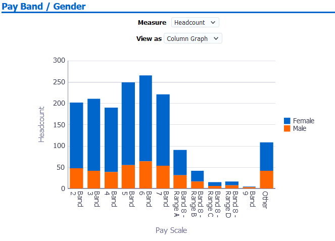
FTE by Assignment Status / Employee Category
Description
This analysis is designed to show the sum of the Full Time Equivalent (FTE) for employees of the organisation, grouped by Employee Category and Assignment Status
Data Items
| Title | Description |
|---|---|
| Employee Category | Full Time / Part Time |
| Assignment Status | Status of the person’s assignment as at the report run date |
| FTE | Sum of FTE of each person in the above bandings |
View Selectors
View as column chart or table. Default column chart.
Example Screenshot
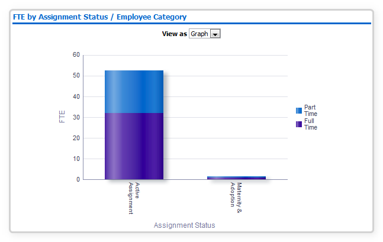
Actions
Click -> Staff List Tab (Restricted to region selected)
FTE vs Establishment
Description
This analysis is designed to show the variance between the position FTE establishment and actual FTE, grouped by AfC Pay Band.
Data Items
| Title | Description |
|---|---|
| Establishment FTE | Sum establishment of all positions included in Prompts |
| FTE | Sum FTE of all employees included in Prompts |
| Pay Band | |
| Staff Group | |
| Occupation Code |
Column Selectors
Group by Pay Band, Staff Group or Occupation Code (Default: Pay Band)
View as Bar Graph or Table (Default: Bar Graph)
Example Screenshot
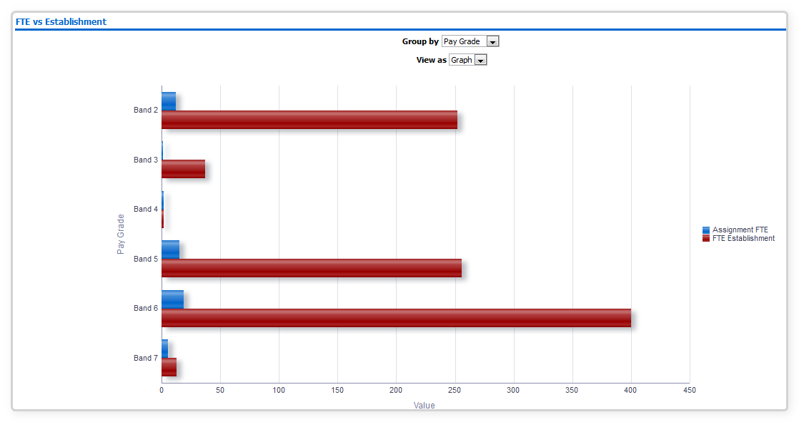
Actions
Click -> Staff List Tab (Restricted to selected region)
Headcount vs Establishment
Description
This analysis is designed to show the variance between the position establishment headcount and actual headcount, grouped by AfC Band.
Data Items
| Title | Description |
|---|---|
| Headcount | Count of employees included in Prompts |
| Establishment Headcount | Sum of headcount establishment of positions included in Prompts |
| Pay Band | |
| Staff Group | |
| Occupation Code |
Column Selectors
Group by Pay Band, Staff Group or Occupation Code (Default: Pay Band)
View as Bar Graph or Table (Default: Bar Graph)
Example Screenshot
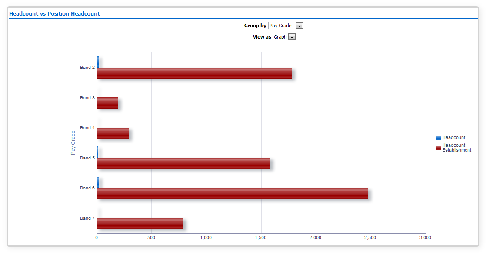
Actions
Click -> Staff List Tab (Restricted to selected region)
Employee Category / Gender
Description
This analysis is designed to show Headcount, % of Headcount and FTE grouped by Employee Category and Gender.
Data Items
| Title | Description |
|---|---|
| Employee Category | Employee Category Data Item against the Assignment |
| Gender | Gender against the Employee Record |
| Headcount | |
| % of Headcount | |
| FTE |
View Selectors
View as Stacked Column Graph or Table (Default Stacked Column Graph)
Example Screenshot
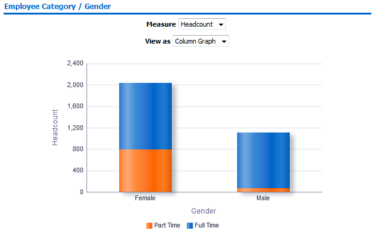
Actions
Click -> Diversity Detail Tab
Length of Service
Description
This analysis is designed to show Headcount, % of Headcount and FTE grouped by Length of Service Band.
Data Items
| Title | Description |
|---|---|
| Length of Service Band | Calculated from employee latest start date |
| Headcount | |
| % of Headcount | |
| FTE |
View Selectors
View as Pie Graph, Column Graph or Table (Default Column Graph)
Example Screenshot

Actions
Click -> Diversity Detail Tab
Staff List Tab
Description
The Staff List tab only include key fields required for reporting a staff list and is designed for users who wish to return a staff list quickly rather than waiting for the full detail page to run.
Prompts
Organisation(s) (Default: None)
Staff Group(s) (Multi-select)
Assignment Category(s) (Multi-select: default: exclude Locum Bank and Honorary)
Person Type(s) (Multi-select, default: Employee, Employee and Applicant)
Employee Person Type(s) (Multi select)
Assignment Status
Occupation Code
Job Role
Pay Grade(s)
Job Sharer
Primary Assignments Only
Effective Date
Organisation Level 1-13
Cost Centre Org Level 1-12
Data Items
| Last Name | Assignment Status |
|---|---|
| First Name | Primary |
| Title | FTE |
| Assignment Number | Organisation |
| Employee Number | Org L1-13 x 4 |
| Position Title | Occupation Code |
| Role | Pay Step Date |
| Area of Work | Fixed Term End Date |
| Staff Group | Fixed Term End Reason |
| Assignment Category | Position Number |
| Work at Home Flag |
Example Screenshot
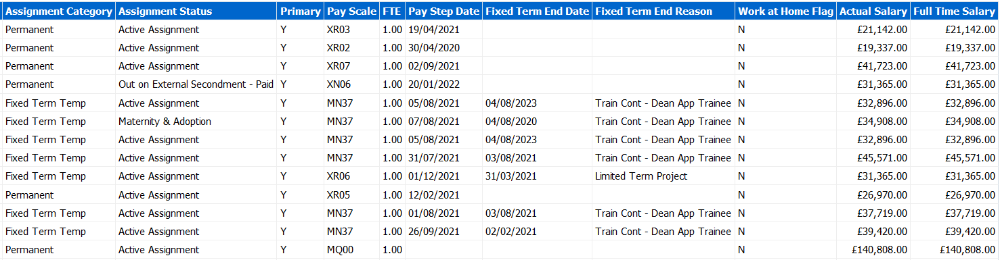
Detail Tab
Description
This tab is designed to provide detailed data restricted to Prompts set on the overview page, and to items selected when navigating to this tab. Note: The detail tab is a list of staff and is not designed to include only people included in the summary.
Prompts
Organisation(s) (Default: None)
Staff Group(s) (Multi-select)
Assignment Category(s) (Multi-select: default: exclude Locum Bank and Honorary)
Person Type(s) (Multi-select, default: Employee, Employee and Applicant)
Employee Person Type(s) (Multi select)
Assignment Status
Occupation Code
Area of Work
Job Role
Pay Grade(s)
Subjective Code(s)
Job Sharer
Primary Assignments Only
Effective Date
Show Additional Supervisor(s)
Organisation Level 1-13
Cost Centre Org Level 1-12
Data Items
| Employee Number | Pay scale Description |
|---|---|
| Assignment Number | Employee Category |
| Last Name | Assignment Status |
| First Name | FTE |
| Middle Name | Occupation Code |
| Preferred Name | Person Type |
| Title | Marital Status |
| Maiden Name | Age (Not returned in HRSS) |
| Employee Person Type | Pay Grade |
| Age Band | Gender |
| Email Address | Length of Service (Years) |
| Organisation | Contract Hours |
| Location | Length of Service (Months) |
| Staff Group | Supervisor |
| Position Number | Position Subjective Code |
| Pay Step Date | Previous Last Name |
| Actual Salary | Department Manager (Assignment) |
| Frequency | Pay Point |
| Fixed Term End Date | Wtr Opt Out Date |
| Date of Birth (Not returned in SSHR) | CSD 1 Week |
| National Insurance Number (Not returned in HRSS) | CSD 3 Months |
| Job Sharer (Yes/No) | CSD 12 Months |
| Wtr Opt Out | Recieve Printed Payslip/P60 |
| Bank Posts Held | Spinal Point |
| Grade Step | NHS Entry Date |
| Job Role | Time in Grade (Yrs) |
| Organisation Level 1-13 | Area of Work |
| Start Date in Grade | Cost Centre Org Level 1-12 |
| Spinal Value | Management Cost |
| Position Title | Start Date in Position |
| Assignment Category | Legacy Payroll Number |
| SD Number | Subjective Code |
| Original Hire Date | Department Manager |
| Primary Assignment (Y/N) | Latest Start Date |
| Supervisor Employee Number | Fixed Term Cont Reason |
| Supervisor Email Address | Address Line 1 |
| Employee Initials | Address Line 2 |
| Employee Name | Address Line 3 |
| Telephone Home | Town or City |
| Telephone Work | County |
| Telephone Mobile | Post Code |
| Flexible Working Pattern | AfC Spinal Point |
| Supervisor Assignment Number | Probation Period |
| Additional Supervisor Name | Probation Units |
| Additional Supervisor Assignment Number | Adjusted Service Date |
| Assignment Start Date | Maximum Part Time Flag |
| Asg Cost Centre | TUPE Transfer |
| Proportion | Assignment End Date |
| Aggregated Service Years | Concatenated Segments |
| Work at Home Flag | Aggregated Service Days |
| Frontline Healthcare Worker Position | Pay scale |
| Frontline Healthcare Worker Assignment | Probation Period End Date |
Column Selectors
Organisation Cost Centre and Organisation Level x 4
Example Screenshot
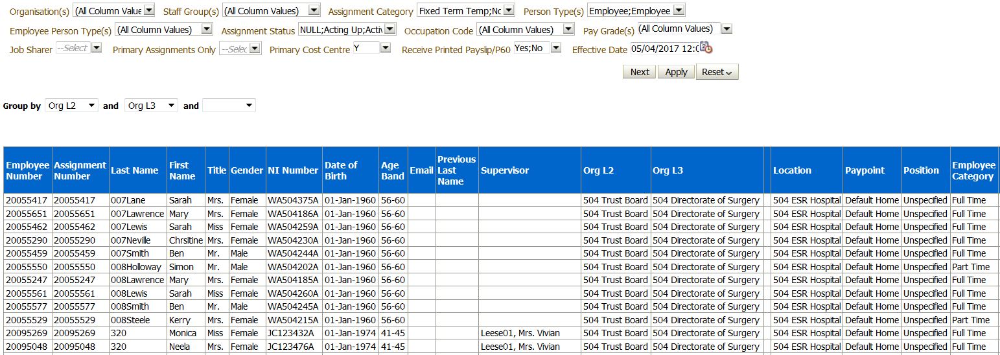
Position Detail Tab
Description
This tab is designed to provide a list of populated positions. Filtering is available by Position Number or Subjective Code using the prompts provided.
Prompts
Effective Date
Position Number(s)
Subjective Code(s)
Data Items
| Position Number | Position Title |
|---|---|
| Occupation Code | Area of Work |
| Organisation | Position FTE |
| Organisation Level 1-13 | Cost Centre Org Level 1-12 |
| Position Headcount | Actual FTE |
| Assignment Count | FTE Variance |
| DBS Disclosure Type | Registration and Membership Body |
| Subjective Code | Pay Grade |
| Staff Group |
Column Selectors
Cost Centre and Organisation Level x 4
Example Screenshot
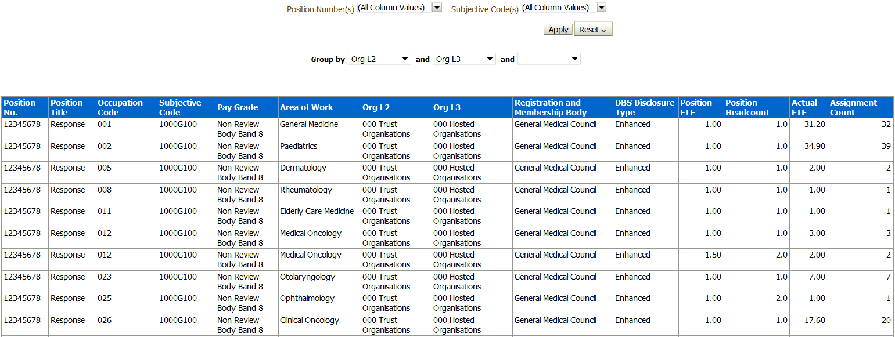
Supervisor Hierarchy Tab
Description
This tab is designed to provide a hierarchy graph showing a user those employees that are part of a supervisor hierarchy for a particular organisation. A supervisor hierarchy graph can only be generated for organisations with 200 or fewer assignments. An assignment count is provided for those assignments with and without a supervisor.
Prompts
Effective Date
Group by: Organisation, Organisation Levels 1 - 13
Data Items
| Organisation | Assignment Count |
|---|
Example Screenshot
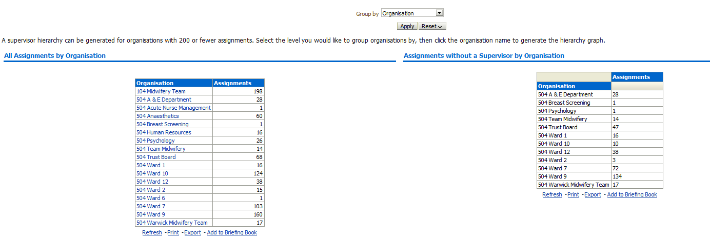
Actions
Organisation > Supervisor Hierarchy Graph
Supervisor Hierarchy Graph
Description
This analysis displays an organisation’s supervisor hierarchy as a hierarchy graph. Users are able to select up to three data items to display below each employee name. Details of assignments without a supervisor are also shown as a table.
Data Items
| Assignment Number | Employee Number |
|---|---|
| Assignment Category | Role |
| Staff Group | Position Title |
| FTE | Occupation Code |
| Assignment Status | Pay Step Date |
| Organisation | Location |
| Pay Scale | Employee Name |
| Supervisor Name |
Example Screenshot
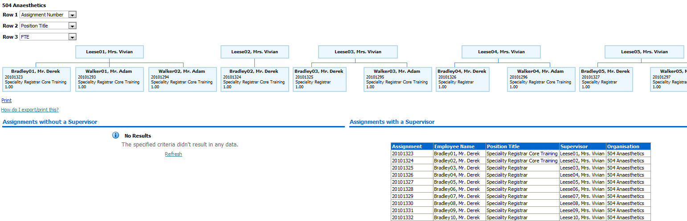
Monthly Staff in Post Tab
Description
This analysis is designed to show Headcount or FTE totals over a period of time (as defined using the available prompt), aggregated by Month or Week. Results can be grouped by several different data items including Org Levels 1-13.
Prompts
Organisation(s) (Multi-select)
Staff Group(s) (Multi-select)
Assignment Category(s) (Multi-select: default: exclude Locum Bank and Honorary)
Employee Category (Multi-select)
Person Type(s) (Multi-select, default: Employee, Employee and Applicant)
Employee Person Type(s) (Multi-select, default: Employee, Employee and Applicant)
Assignment Status
Area of Work
Occupation Code(s)
Job Role(s)
Pay Grade(s)
Primary Assignments Only
Employee Location
Date Between (default: Previous three Months)
Organisation Level 1-13
Cost Centre Org Level 1-12
View Selectors
FTE by Month (default)
Headcount by Month
Employee Count by Month
FTE by Week
Headcount by Week
Employee Count by Week
FTE by Year
Headcount by Year
Employee Count by Year
Group By
Job Role
Assignment Category
Staff Group (default)
Org Level 1-13
Area of Work
Employee Category
Pay Band
Assignment Status
Occupation Code
Data Items
| Month | FTE |
|---|---|
| Headcount | Job Role |
| Area of Work | Assignment Category |
| Employee Category | Staff Group |
| Pay Band | Org Level 1-13 |
| Week | Occupation Code |
| Year |
Example Screenshot
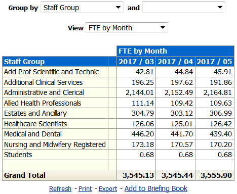
Actions
None
Organisation Hierarchy Tab
Description
This tab is designed to provide a hierarchy graph based on selections made using the prompts available. The Organisation Level, Number of Levels to Show and Starting Level are available to set using the available prompts. A Headcount, Assignment Count and Total FTE are shown by Organisation.
Prompts
Levels 2-7 (default: 2)
Starting Level (default: 1)
Data Items
| Organisation | Headcount |
|---|---|
| Assignment Count | FTE |
Example Screenshot
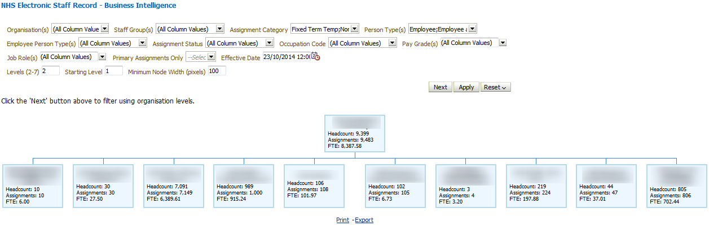
Actions
None
Employee Details Tab
Description
This tab provides the user with a range of information relating to a specific employee as defined by the available prompts.
Note: Leavers can be returned up to 2 years prior to current date.
Prompts
Employee Name *
Assignment Number *
Gauge Red From (default: 5%)
Include Extra Years of Absence
Employee Details
Description
This analysis is designed to show various Employee details as part of the Employee Details Dashboard Page.
Data Items
| Employee Name | Employee Address Line1 |
|---|---|
| Assignment Number | Employee Address Line2 |
| Organisation | Employee Address Line3 |
| First Name | Employee Address City |
| Last Name | Employee Address Region1 |
| Email Address | Employee Address Region2 |
| Work Phone | Employee Address Region3 |
| Home Phone | Employee Address Postal Code |
| Mobile Phone | Employee Address Country |
| Position Title | |
| Pay Grade | |
| Assignment Category | |
| FTE / Contract Hours | |
| Supervisor | |
| Location | |
| Latest Start Date | |
| DBS Match |
Example Screenshot
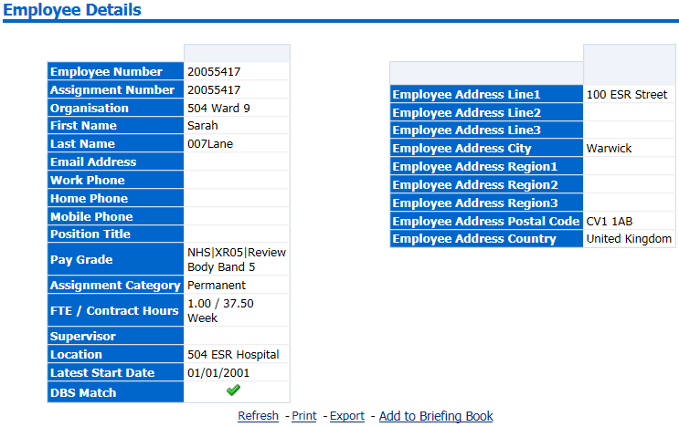
Prompts
None
Actions
None
Employee Sickness Absence
Description
This analysis is designed to show an Employees Absence Sickness %, Available FTE, FTE Lost and Abs Days Lost.
Data Items
| Absence Sickness % (FTE) | FTE Lost |
|---|---|
| Available FTE | Absence Days Lost |
Example Screenshot
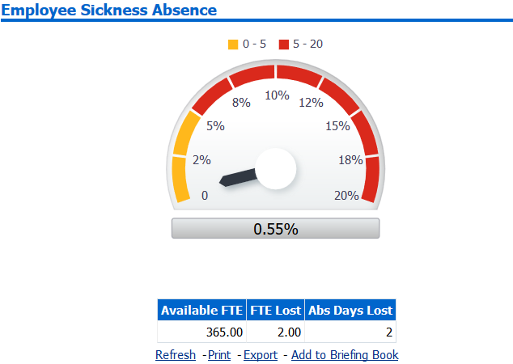
Prompts
None
Actions
None
Employee Absence Details
Description
This analysis is designed to show the detail of an Employees Absence.
Data Items
| Absence Start Date | Absence End Date |
|---|---|
| Absence Type | Absence Reason |
| Duration (Days) | Duration (Hours) |
| Estimated Cost |
Example Screenshot
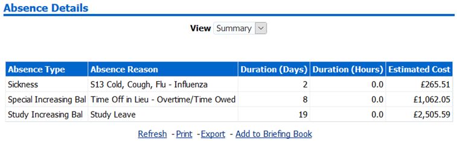
View Selector
View as Summary (default) or Detail (includes Abs Start/End Date)
Actions
None
Appraisal Reviews
Description
This analysis is designed to show an Employees Appraisal Details.
Data Items
| Review Type | Appraisal Date |
|---|---|
| Period End Date | Next Appraisal Date |
| Passed Through Gateway | Period Start Date |
Example Screenshot
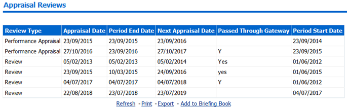
Prompts
None
Actions
None
Property Register
Description
This analysis is designed to show an Employees Property Register Details.
Data Items
| Asset Number | Item Name |
|---|
Example Screenshot

Prompts
None
Actions
None
Professional Registration Body
Description
This analysis is designed to show an Employees Professional Registration Details.
Data Items
| Professional Registration Body | Match |
|---|
Example Screenshot

Prompts
None
Actions
None
Absence Calendar
Description
This analysis is designed to show an Employees Absence display within as a Calendar View.
Data Items
| Month Year | Days of Month |
|---|---|
| Absence Indicator |
Example Screenshot

Prompts
None
Actions
None
Compliance Matching
Description
This analysis is designed to show an Employees Compliance Information.
Data Items
| Competency | Level Required |
|---|---|
| Competency Match | Expiry Date |
| Level Achieved |
Example Screenshot

Prompts
None
Actions
None
Enrolments
Description
This analysis is designed to show an Employees Enrolment Information.
Data Items
| Course | Start Date |
|---|---|
| Enrolment Status | Completion Date |
| Delivery Mode |
Example Screenshot
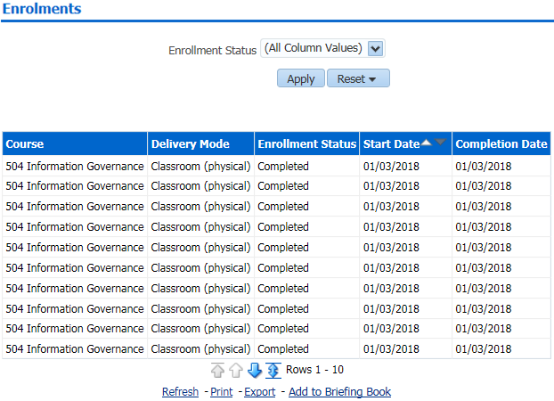
Prompts
Enrollment Status
Actions
None
Certifications
Description
This analysis is designed to show an Employees Certification Details.
Data Items
| Certification Name | Progress of Certification |
|---|---|
| Certification Status | Target Date |
Example Screenshot
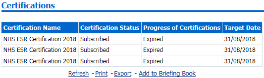
Prompts
None
Actions
None
Learning Paths
Description
This analysis is designed to show an Employees Learning Path Information.
Data Items
| Learning Path | Learning Path Completed Courses |
|---|---|
| Subscription Status | Start Date |
Example Screenshot
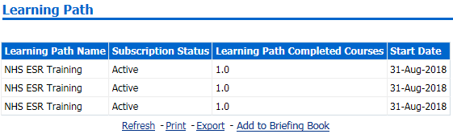
Prompts
None
Actions
None
Qualifications
Description
This analysis is designed to show an Employees Qualifications Details.
Data Items
| Qualification Type | Qualification Start Date |
|---|---|
| Qualification Title | Qualification End Date |
| Establishment |
Example Screenshot

Prompts
None
Actions
None
Objectives
Description
This analysis is designed to show an Employees Objectives Information.
Data Items
| Objective Name | Target Date |
|---|---|
| Start Date | Complete (%) |
Example Screenshot

Prompts
None
Actions
None
Previous Employment
Description
This analysis is designed to show an Employees Previous Employment Information.
Data Items
| Employer Name | End Date |
|---|---|
| Start Date |
Example Screenshot
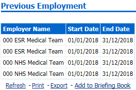
Prompts
None
Actions
None
Job History
Description
This analysis is designed to show an Employees Job History.
Data Items
| Job Role | Change Date |
|---|
Example Screenshot
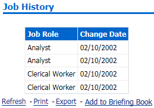
Prompts
None
Actions
None
Property Register Tab
Description
This tab provided user with a range of information relating to the Property Register functionality.
Prompts
Organisation (Default: None)
Staff Group(s) (Multi-select)
Person Type(s) (Multi-select, default: Employee, Employee and Applicant)
Employee Person Type(s) (Multi select)
Assignment Status
Occupation Code
Assignment Category(s) (Multi-select: default: exclude Locum Bank and Honorary)
Primary Assignments Only
Effective Date (Default today)
Pay Grade
Organisation Level 1-13
Cost Centre Org Level 1-12
Job Role
Property Register
Description
This analysis is designed to show the number of Property Register entries grouped by Staff Group or Organisation Levels 1-4. An Effective Date Prompt is available for users to set as required.
Data Items
| Staff Group | Count of Property Register Items |
|---|---|
| Organisation Level(s) 1-4 |
Group by
Staff Group (default)
Organisation Levels 1-4
View as
Bar Graph (default)
Table
Example Screenshot

Property Register Timeline
Description
This analysis is designed to show the number of Property Register entries over a period of time (default previous 12 months).
Data Items
| Month | Count of Property Register Items |
|---|
Prompts
Date Between (default: previous 12 months)
Group by
None
View as
Line Graph (default)
Table
Example Screenshot
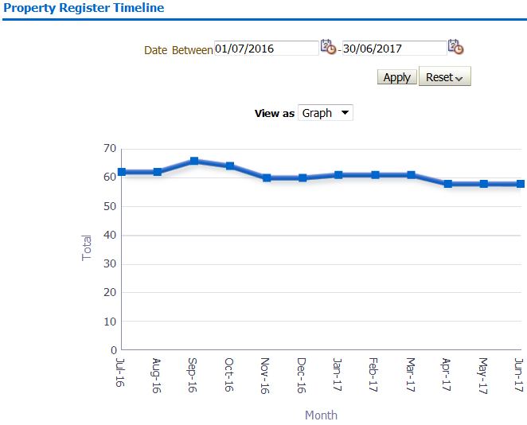
Property Register Detail
Description
This analysis is designed to show the detail of Property Register entries at an effective date (as defined by the user).
Data Items
| Last Name | Property End Date |
|---|---|
| Title | First Name |
| Email Address | Employee Number |
| Staff Group | Organisation |
| Supervisor Name | Item Name |
| Supervisor Email | Asset Number |
| Property Start Date | Organisation Level 1-13 |
Group by
Organisation Level 1-13
Example Screenshot
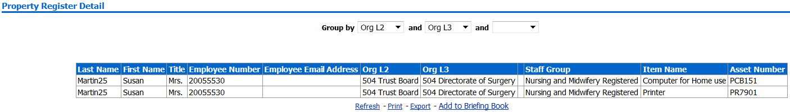
Benefits Entitlements Tab
Description
This analysis enables organisations to return data regarding an individual’s entitlement to occupational and organisation benefits.
Prompts
Organisation
Staff Group(s)
Assignment Category(s)
Person Type(s)
Employee Person Type(s)
Assignment Status
Occupation Code
Job Role
Pay Grade
Job Sharer
Primary Assignments Only
Effective Date
Organisation Level 1-13
Cost Centre Org Level 1-12
Data Items
| Organisation | Initial Assignment |
|---|---|
| Last Name | Start Date |
| First Name | Assignment Effective Start Date |
| Initials | Assignment Effective End Date |
| Title | Assignment Status |
| Assignment Number | Fixed Term Temp Cont End Date |
| Primary Assignment | Fixed Term Temp Cont Reason |
| Staff Group | Bank Post Held |
| Role | Date of Birth |
| Person Type | NI Number |
| Position Title | Latest Hire Date |
| Pay Scale | Person Effective From Date |
| Pay Scale Description | NHS Entry Date |
| Grade Step | CSD 1 Week |
| Spinal Point | CSD 3 Months |
| Afc Spinal Point | CSD 12 Months |
| Pay Step Date | Loss of Office Payment Date |
| FTE | Loss of Office Rec Serv Date |
| Contract Hours | NHS Pensioner |
| Assignment Category | Date NHS Pension Benefits Paid To |
| Employee Category |
Example Screenshot
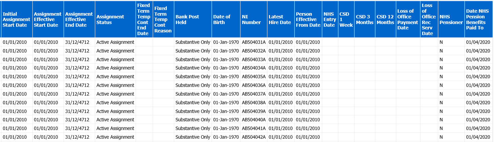
Real Time Staff List Tab
Description
This Real-time Staff List analysis is a direct replication of the NHS Organisation Profile>Staff List (Detail) worksheet available in DISCO. Please note that this analysis is real-time and not updated overnight, therefore the report may take longer to run than other BI analyses.
Prompts
Organisation Name
Organisation Hierarchy Name
Staff Group
Role
Person Type
Employee Person Type
Assignment Category
Primary Assignments Only
Data Items
| Organisation Name | Primary Assignment |
|---|---|
| Employee Title | Legacy Payroll Number |
| First Name | Clinical Second Speciality |
| Last Name | Area of Work |
| Preferred Name | Bank Posts Held |
| Employee Full Name | Maximum Part Time Flag |
| Employee Number | Wtr Opt Out |
| Staff Group | Wtr Opt Out Date |
| Role | Cost Centre |
| Occupation Code | Position Subjective Code |
| Position Title | Management Cost |
| Position Number | CSD 3 Months |
| Start Date in Position | CSD 12 Months |
| Pay-scale | NHS Entry Date |
| Pay-scale Description | Marital Status (Core Users Only) |
| Spinal Point | Maiden Name (Core Users Only) |
| AFC Spinal Point | Previous Last Name |
| Spinal Value | Age (Core Users Only) |
| Salary Value | Birth Date (Core Users Only) |
| Pay Step Date | NI Number (Core Users Only) |
| FTE | SD Number |
| Contract Hours | Email Address |
| Assignment Category | Address Line1 |
| Employee Category | Address Line2 |
| Assignment Number | Address Line3 |
| Assignment Start Date | Town or City |
| Assignment End Date | County |
| Assignment Status | NHS CRS Identifier |
| Payroll Name | NHS CRS Date Authenticated |
| Paypoint / Payroll Point | e-GIF and NHS CRS Status |
| Probation Period | Telephone Home |
| Probation Unit | Telephone Work |
| Fixed Term End Date | Telephone Mobile |
| Fixed Term Reason | TUPE Transfer |
| Department Manager | Adjusted Service Date |
| Supervisor | Original Hire Date |
| Job sharer | Latest Start Date |
| Organisation Level 1-13 | Cost Centre Organisation Level 1-12 |
Example Screenshot

Gross Cost Table Tab
Description
This analysis provides users with the necessary information to enable the analysis of employee costs in terms of the basic salary, employer National Insurance contributions and employer pension contributions. This data can be used to estimate the gross cost of an employee at any valid payscale and grade step combination.
Prompts
* Payscale(s)
* Employers Pension Percentage Contribution
* Report Effective Date
Data Items
| Payscale Description | Weekly Basic |
|---|---|
| Payscale | Hourly Basic |
| Contract Type | Annual Estimated Ers NHI |
| Grade Step | Annual Estimated Ers Superan |
| Annual Basic | Gross Cost |
| Monthly Basic |
Example Screenshot
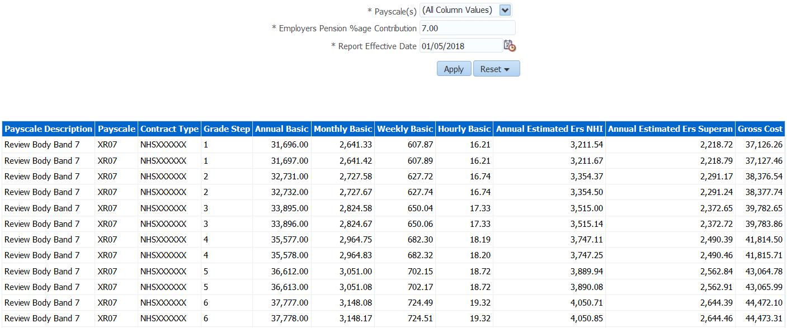
Emergency Contacts Tab
Description
This analysis returns a list of Contacts for employees. Contacts with an in-date telephone number or in-date address are returned and those with missing or out of date values are returned as blank.
Prompts
Employee Number
Employee Name is LIKE (pattern match)
Contact Relationship
Organisation
Primary Assignments Only
Data Items
| Organisation | Employee Postal Code |
|---|---|
| Employee Title | Contact Name |
| Employee First Name | Contact Address Line 1 |
| Employee Last Name | Contact Address Line 2 |
| Employee Number | Contact Address Line 3 |
| Employee Email Address | Contact Town |
| Supervisor Name | Contact County |
| Supervisor Email Address | Contact Postal Code |
| Employee Address Line 1 | Contact Mobile Phone |
| Employee Address Line 2 | Contact Home Phone |
| Employee Address Line 3 | Contact Work Phone |
| Employee City | Additional Phone |
Example Screenshot
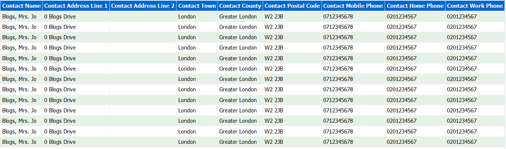
Assignments with Missing Contact Details
Description
This analysis returns a list of employees with no contacts and those with no contact information recorded in ESR.
Data Items
| Organisation | Supervisor Email Address |
|---|---|
| Title | Contact Name |
| First Name | Contact Relationship |
| Last Name | Contact Date From |
| Employee Number | Contact Date To |
| Employee Email Address | Contact Effective Start Date |
| Supervisor Name | Contact Effective End Date |
Apprenticeships Summary
Description
Available on this tab are a number of summary analyses designed to provide users with high level information of employees undertaking Apprenticeship at a specified report effective date or period. The data returned is for employees whose EIT Apprenticeship details are populated in ESR and does not include those on an Apprentice Job Role which is no longer valid. Organisations are therefore advised to record Apprenticeships data using the Assignment EIT Apprenticeship functionality available in ESR to ensure apprenticeships are being reported correctly. Please note that this tab is also available in the NHS Learning and Adminisatration Dashboard.
Prompts
Effective Date
Apprentice Type
Status
Include Leavers for Previous Two Years (Yes: Optional)
Summary
Description
This analysis is designed to show FTE, Headcount (Default) and Headcount percentage of employees undertaking Apprenticeship at a specified report effective date grouped by Staff Group, Organisation Levels 1-13, Pay Grade, Age Band and a number of EIT Apprenticeship fields.
Data Items
| Staff Group | Apprenticeship Level |
|---|---|
| Organisation Level(s) 1-13 | Framework Standard |
| Staff Group | FTE |
| Pay Grade | Headcount |
| Age Band | Headcount % |
| Apprentice Status | |
| Apprentice Type | |
| Main Training Provider |
View Selector
View as Column Graph (Default) or Table
Example Screenshot

Apprenticeships Trending by Status
Description
This analysis is designed to show the number of Apprenticeships on a monthly basis as at the last day of the month, defaulted to one year ago from the last day of previous month.
Data Items
| Apprentice Status | Month |
|---|---|
| Headcount |
View Selector
View as Line Graph (Default) or Pivot Table
Example Screenshot

In Progress Apprentices NI Category RAG Status
Description
This analysis is designed to highlight Green where an employee’s NI Category is H and age is less than 25 years, and Red where NI Category is Not H (or is NULL) and age is less than 25. By default the analysis returns employees with an apprentice status of ‘In Progress’ however users can select other statuses using Apprentice Status prompt available on the dashboard.
Data Items
| Assignment Number | Actual End Date |
|---|---|
| Employee Number | Pay Grade |
| Organisation Name | Age Band |
| Apprentice Type | Age (Not Available to SSHR) |
| Apprenticeship Status | Date of Birth (Not Available to SSHR) |
| Start Date | NI Category is H (Yes/No) |
| Proposed End Date |
Example Screenshot
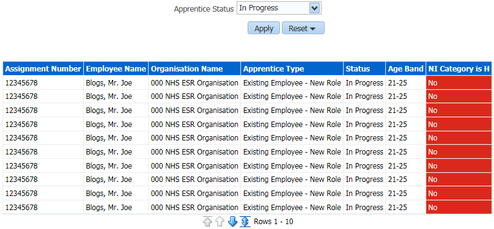
Apprenticeships Detail
Description
The Apprenticeships detail analysis returns a list of employees undertaking Apprenticeship within the Organisation. Only employees whose EIT Apprenticeship details are populated in ESR are returned and does not include those on an Apprentice Job Role which is no longer valid. Organisations are therefore advised to record Apprenticeships data using the Assignment EIT Apprenticeship functionality available in ESR to ensure apprenticeships are being reported correctly. Please note that this tab is also available in the NHS Learning Administration Dashboard.
Data Items
| Employee Number | Position Title |
|---|---|
| Assignment Number | FTE |
| Last Name | Contract Hours |
| First Name | Pay Grade |
| Gender | Organisation Level 1-13 |
| Email Address | Cost Centre Org L1-12 |
| Assignment Category | Apprentice Type |
| Assignment Status | Apprenticeship Level |
| Primary Assignment | Framework Standard |
| Supervisor Name | Status |
| Supervisor Email Address | Start Date |
| Staff Group | Proposed End Date |
| Role | Actual End Date |
| Occupation Code | Main Training Provider |
| Area of Work | EPA Centre |
| Location Name | Age Band |
| Position Number | Employee Latest Start Date |
Prompts
Effective Date
Apprentice Type
Status
Include Leavers for Previous Two Years (Yes: Optional)
Column Selector
Organisation Level 1-13
Cost Centre Org L1-12
Example Screenshot
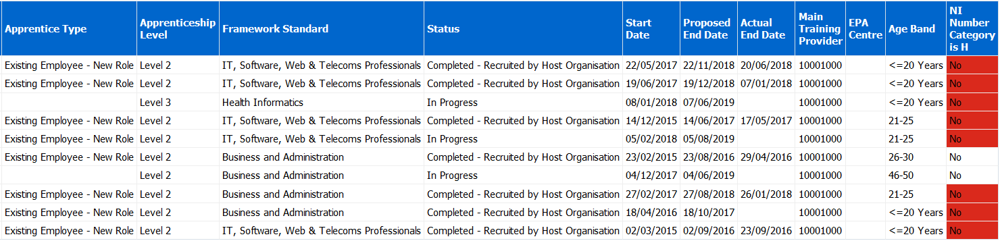
CRS Details Tab
Description
This analysis provides employes CRS Details for core users and is not available to self-service users.
Prompts
Effective Date
Data Items
| Employee Number | NHS CRS Preferred Smartcard Display Name |
|---|---|
| Assignment Number | NHS CRS Registration Authority UUID |
| Last Name | NHS CRS Authentication Date |
| First Name | e-GIF and NHS CRS Status |
| Title | CRS Position Name 1 |
| NI Number | CRS Position Description 1 |
| CRS Position Name 2 | |
| Supervisor | CRS Position Description 2 |
| Supervisor Employee Number | CRS Position Name 3 |
| Organisation Name | CRS Position Description 3 |
| Org L1-13 | CRS Position Name 4 |
| Org Cost Centre 1-12 | CRS Position Description 4 |
| Location | CRS Position Name 5 |
| Position Number | CRS Position Description 5 |
| Position Title | CRS Position Name 6 |
| Assignment Category | CRS Position Description 6 |
| Assignment Status | CRS Position Name 7 |
| FTE | CRS Position Description 7 |
| Staff Group | CRS Position Name 8 |
| Role | CRS Position Description 8 |
| Person Type |
Example Screenshot
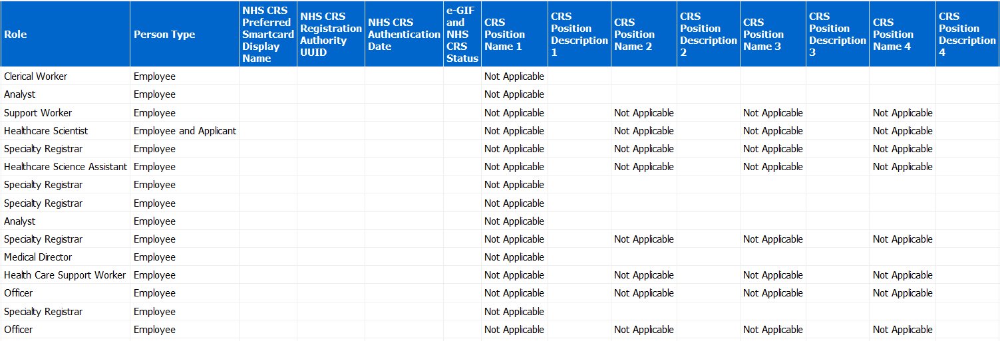
Supplementary Role Tab
Description
This tab by default returns a full staff list however a prompt is available to restrict to only employees with Supplementary Role(s).
Prompts
Organisation(s) (Default: None)
Staff Group(s) (Multi-select)
Assignment Category(s) (Multi-select: default: exclude Locum Bank and Honorary)
Person Type(s) (Multi-select, default: Employee, Employee and Applicant)
Employee Person Type(s) (Multi select)
Assignment Status
Occupation Code
Job Role
Pay Grade(s)
Job Sharer
Primary Assignments Only
Effective Date
Supplementary Role Only
Supplementary Role
Organisation Level 1-13
Cost Centre Org Level 1-12
Data Items
| Last Name | Organisation |
|---|---|
| First Name | Org L1-13 x 4 |
| Title | Occupation Code |
| Assignment Number | Pay Step Date |
| Employee Number | Fixed Term End Date |
| Position Title | Fixed Term End Reason |
| Role | Manager Flag |
| Staff Group | SSHR Admin Approval Group A |
| Assignment Category | SSHR Admin Approval Group B |
| Assignment Status | Employee Action Approved By |
| Primary | Supplementary Role |
| Contract Hours | Supplementary Role Start Date |
| FTE | Supplementary Role End Date |
| Email Address |
Example Screenshot
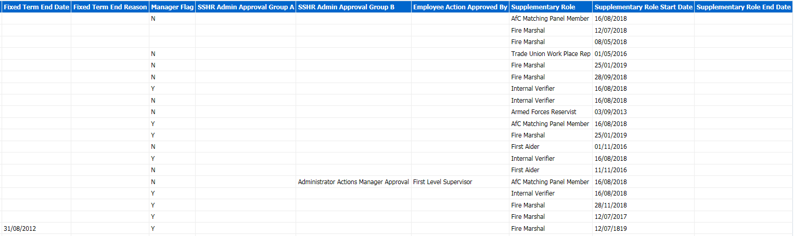
Conflict of Interest Summary Tab
Description
This analysis is designed to provide the user with Conflict of Interest figures grouped by various data items such as Staff Group or Occupation Code.
View Selectors
Bar Graph (default)
Table
Column Selectors(Table View only)
Staff Group
Occupation Code
Job Role
Organisation
Organisation L1-13
Data Items
| Headcount | Consented Employees Headcount (% of CoI Headcount) |
|---|---|
| Conflict of Interest Headcount | In Date CoI Headcount |
| Conflict of Interest Headcount % | In Date CoI Headcount (% of CoI Headcount) |
| Consented Employees Headcount |
Example Screenshot
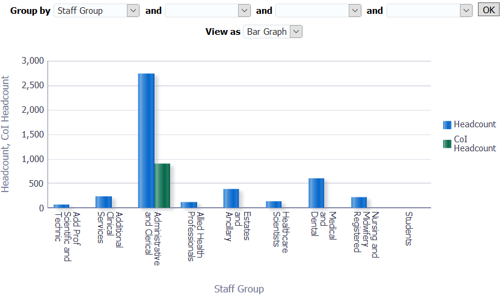
Conflict of Interest Detail Tab
Description
This tab by default returns a full staff list however a prompt is available to restrict the analysis to only employees with Conflict of Interest recorded in ESR.
Prompts
Restrict to Employees with a Conflict of Interest Record (Yes)
Restrict to Employees who have consented to have their CoI data published (Yes)
Restrict to only In Date Conflict of Interest Record (Yes)
Data Items
| Employee Name | Action Taken By |
|---|---|
| Employee Number | Telephone Mobile |
| Assignment Number | Consent Flag |
| Person Type | Interest Declared |
| Organisation | Interest Category |
| Org L1-13 x 4 | Interest Situation |
| Staff Group | Interest Description |
| Position Title | Comments |
| Role | CoI Date From |
| Pay Scale | CoI Date To |
| Work at Home Flag | Change Type |
| Email Address | Creation Date |
| Telephone Work | Created By |
| Supervisor Name | Last Updated Date |
| Supervisor Email Address | Last Updated By |
| Manager Action | Supplementary Role (Table inc. Supplementary Role view only) |
| Action Taken | Supplementary Role Start Date (Table inc. Supplementary Role view only) |
| Action Date | Supplementary Role End Date (Table inc. Supplementary Role view only) |
View Selector
Table (Default)
Table (inc. Supplementary Role)
Example Screenshot
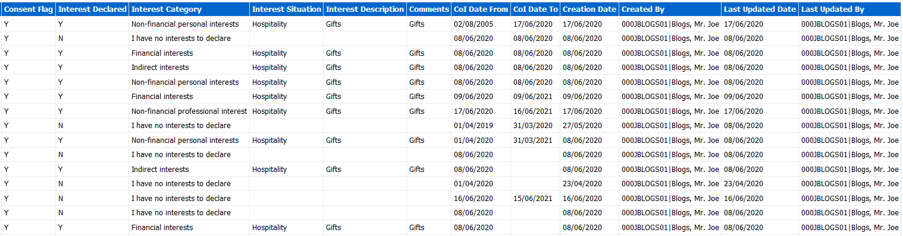
Flexible Working
Description
The Flexible Working page is made up of a number of analyses designed to provide a summary and detail view of the Flexible Working area of Employee Relations in ESR.
Summary
Available are two analyses designed to enable users to report the number of Flexible Working requests grouped by a number of workforce fields such as Organisation Levels, Organisation, Staff Group and various protected characteristics. Also returned is the number and percentage of those requests that have been accepted. The other summary analysis returns employees where more than one Flexible Working request has been submitted.
Prompts
Organisation(s)
Staff Group(s)
Assignment Category
Person Type(s)
Employee Person Type(s)
Assignment Status
Occupation Code
Job Role(s)
Pay Grade(s)
Job Sharer
Primary Assignment Only
Date Between
* Restrict to Open Cases Only? (Yes/no)
Column Selectors x 1
Organisation Name
Organisation Level 1-13
Staff Group
Flexible Working Type
Various Protected Characteristics (only available to HR and BI Admin users)
Data Items
| Org Levels 1-13 | No. of Requests (Summary 2) |
|---|---|
| Organisation Name | Employee Number (Summary 2) |
| Gender Ethnic | Employee Name (Summary 2) |
| Disability | Staff Group (Summary 2) |
| Sexual Orientation | Role (Summary 2) |
| Religious Belief | |
| Flexible Working Type (Summary 1) | |
| Count of Flexible Working Requests (Summary 1) | |
| Accepted Requests (Summary 1) | |
| % of Approved Requests (Summary 1) |
Detail
This analysis is designed to provide a detail view of the Flexible Working area of Employee Relations
Column Selectors x 5
Organisation Name
Organisation Level 1-13
Various Protected Characteristics (only available to HR and BI Admin users)
Data Items
| Employee Number | Application Complete |
|---|---|
| Employee Name | Requested Change |
| Staff Group | Other Applications Made |
| Role | Meeting 1 Date |
| Position Name | Within 28 Days |
| Pay Grade | Represented at Meeting 1 By |
| Headcount | Meeting 2 Date |
| FTE | Represented at Meeting 2 By |
| Type | Decision Required By |
| Process Start Date | Decision Date |
| Case Reference Number | Outcome |
| Position 1 | Grounds for Rejection |
| Position 2 | Effective Date of Change |
| Position 3 | Date Decision Letter Sent |
| HR Contact | Process End Date |
| Line Manager Contact | Calendar Days Open |
| Date Application Received | Meeting 1 Date |
Example Screenshot
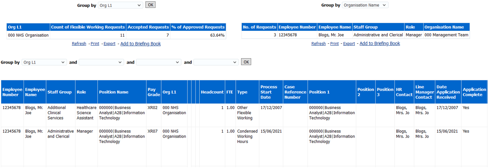